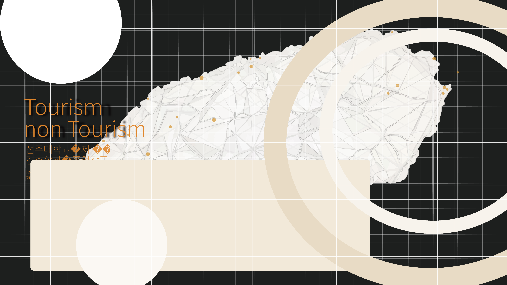

전주대학교 건축학과 졸업작품전
Jeonju Univ. Department of Architecture.
2026 Graduation Exhibition.
Tourism
non Tourism
CELEBRATION
전시의 첫 인상을 이어가는 소개 섹션
홈 PDF 기반 배경은 유지하고, 텍스트만 HTML 레이어로 분리한 상태입니다. 이제 폰트/줄바꿈/정렬 조정이 쉬워졌습니다.
다음부터는 배경 이미지를 더 정교하게 다듬거나 실제 전시 콘텐츠를 자연스럽게 이어 붙이면 됩니다.
WORKS
작품, 배치도, 참여자 정보를 확장할 수 있는 영역
전시배치도 PDF도 같은 방식으로 배경과 텍스트를 분리해서 웹 섹션으로 재구성할 수 있습니다.
01Exhibition Map
02Studio Archive
03Project Gallery
04Credits & Info